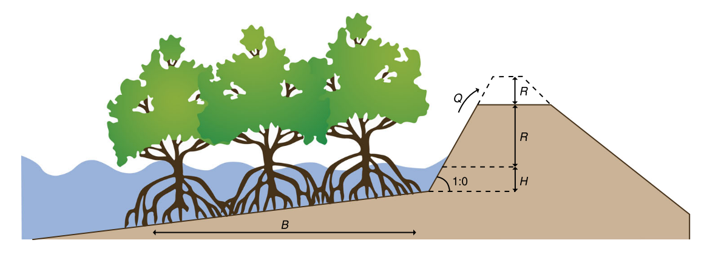
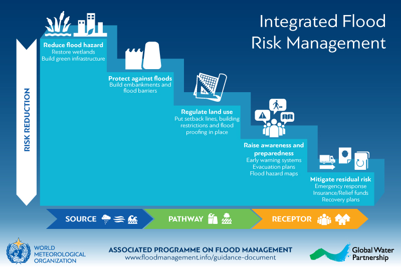
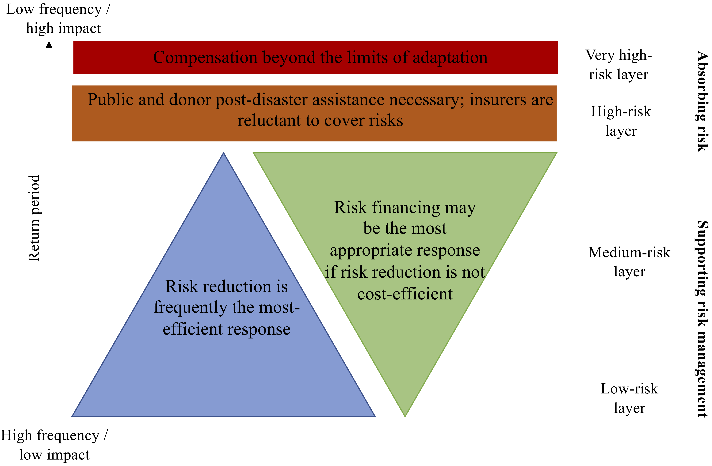
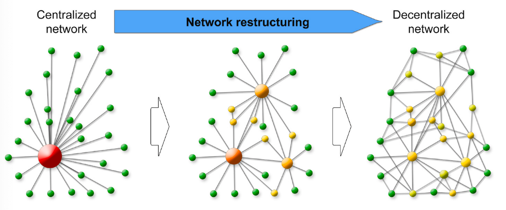
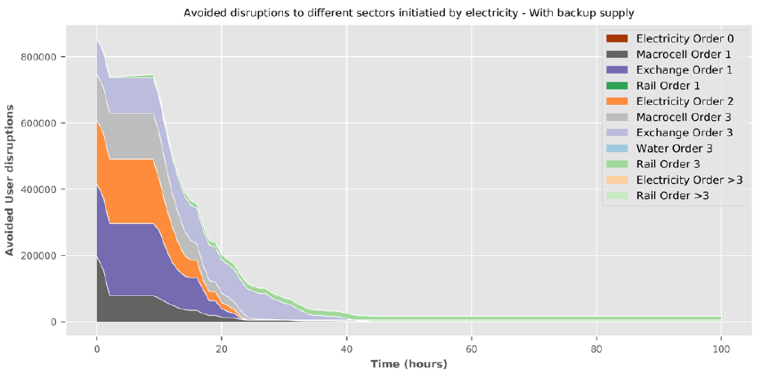

In this lecture we will discuss the various ways in which resilience can be improved through the use of targeted interventions. A distinction between the type of interventions and their ability to reduce risk will be discussed. In addition, we introduce ways to reduce systemic risk.
In the previous lectures, it was shown that risk is increasing over time and will likely increase in the future due to the combined effect of climate change and socio-economic growth. Therefore, decision-makers have implemented various ways of enhancing resilience, both to reduce the physical asset damages and to improve network-wide resilience. In this lecture, we will briefly discuss both of these resilience options.
To reduce physical asset damages, a variety of interventions can be implemented. These interventions are often characterised as either structural or non-structural solutions.
Structural solutions (also known as engineered solutions) often refer to any physical construction to reduce or avoid the impacts of hazards. Structural solutions can be further subdivided into hard and soft structures. Examples of hard structural solutions are embankments, floodproof housing, reservoirs, shelters, etc. Soft solutions, however, are interventions like mangrove restoration and artificial nourishments, which involve providing a natural buffer to reduce risk.
More recently, the term ‘hybrid solutions’ has been coined, which combines hard and soft measures. For instance, mangrove restoration in front of an embankment can reduce the elevation of the coastal embankments (see Figure 14.1.1) because of the wave dampening effect of mangroves (see mini-lecture 16.2 for more information). Moreover, the combination of beach nourishment with a seawall can reinforce both their functionalities, with the nourishment buffering small storms, while the seawall would only be used during very severe events.
Non-structural solutions involve the use of policies, awareness and post-disaster support to reduce hazard risk. Examples are building codes, land-use planning, public awareness and emergency preparedness programmes and insurance.

Figure 14.1.1: An example of a hybrid solution in which mangrove reforestation in front of embankments can allow reduced embankment height (Jongman 2018)
In practice, interventions are not implemented in isolation. Often a portfolio of structural and non-structural interventions is designed, aimed at reducing risk (Jongman 2018). How different interventions complement each other can be easily demonstrated through the so-called ‘risk cascade,’ which looks at the sequence of how interventions can reduce risk, either at the source, the pathways of impact, or the receptor.

Figure 14.1.2: The risk cascade for flood risk management (APFM 2020). Interventions that reduce the hazards, such as wetland restoration or mangroves, are found at the top (the source). Protection measures (e.g. embankments) reduce the hazard and exposure of assets. Land-use planning does not influence the source of the hazard much, but does influence the exposure of assets. Finally, awareness and preparedness systems and interventions targeted at reducing residual risk (e.g. insurance, recovery) mainly help the receptors of the hazard to become less vulnerable or may help them recover quickly.
It has been recognised that relying on a single cascade will not be efficient in reducing risk. For instance, wetlands might buffer small events, but not very severe events. On the other hand, solely relying on structural measures might make a disaster very severe when it happens, because there is a lack of awareness and preparedness for such an event. A well-designed portfolio of risk and resilience measures therefore combines interventions from different cascades.
The balance between different interventions within a portfolio depends on the local risk setting. A good way to look at this is through the ‘risk layering’ concept (Mechler et al. 2014).
Risk layering can help to differentiate between different levels of risk, in terms of the probability of occurrence, and the degree of stress imposed by the risk. It can help the design of risk management strategies that are effective for low-, medium- and high-probability events, taking the absorption capacity of communities and governments into account. This framework can be applied for a specific hazard or across hazards.
For frequent low-impact events, hazard reduction, protection and land-use planning measures are often most efficient. For medium-layer risks, the interventions to reduce risk in the sources and pathways (see above sub-section) should be combined with insurance and other financial instruments to cope with the residual risk. For very rare and catastrophic events, public and international assistance is necessary, including donor assistance for low-income countries.
For infrastructure systems, a similar concept can be applied. Engineering design standards often help protect a road or power plant against frequent events. However, during very extreme events that result in damage or shutting down of infrastructure systems, it is important to have a financial buffer available to quickly recover and reconstruct the infrastructure system after failure. This should be combined with insurance in order to avoid overwhelming the financial coping capacity of governments. Hence, stress-testing exercises are extremely helpful to understand system response to different risk layers.

Figure 14.1.3: The risk layering concept with the return period on the left and the balance of risk reduction and risk financing in the middle. It emphasises that different risk and resilience strategies need to be targeted for different types of events (adapted from Mechler et al. 2014).
The unique nature of infrastructure systems means that a single node failure has the potential to cause far-reaching systemic impacts. The aforementioned risk frameworks often only focus on reducing the direct asset failure and impacts but do not consider systemic risks.
Therefore, one should also consider interventions that minimise the systemic risk by reducing the potential adverse cascading effects of infrastructure failure. Examples of such network-wide interventions to improve resilience are, for instance:
Incorporating backup options to mitigate disruptions of services
Network restructuring
Increasing network redundancy and rerouting options (e.g. for transport systems)
Speeding up the recovery of damaged assets to bring back the network to a normal level of service.
Hence, for infrastructure systems, the portfolio is a balanced mix of both asset-level interventions and network-wide interventions, with the latter being inherently more complicated to design.
Figure 14.1.4 shows an example of a hypothetical infrastructure system – say an electricity network - with the existing network being a very centralised one (left) (Hochrainer-Stigler et al. 2020). If the asset in red fails, a systemic shock will be very large as there is no redundancy at all in the network. The network in the middle and right are much more decentralised. If any of the larger, more central, nodes fail, the service disruption of the electricity is buffered by other nodes taking over the service. However, having many connections also means that other components are more easily affected. Therefore, a balance of redundancy and the risk of transmission is important to consider when improving network resilience.

Figure 14.1.4: An example of network restructuring from a centralised network towards a decentralised network (Hochrainer-Stigler et al. 2020)
Improving the network resilience of real-world infrastructure systems is often more difficult. This is because:
Networks are often fixed infrastructures that cannot be easily restructured
The complex and often non-linear interactions make it hard to know where to target interventions to improve network resilience
The benefits of improving network resilience are often harder to quantify than reducing asset risk.
Within a risk and resilience study for the United Kingdom (Pant et al. 2020), the benefits of adding backups to the electricity network was tested. Failures in the electricity network can easily propagate to other infrastructure networks (telecoms, water, and transport). In this idealised scenario using real-world networks, the effect of having backup for a 100-hour disruptive event was tested.
The difference between the users affected with and without backup is shown in Figure 14.1.5. In the original scenarios, the disruption was equal to around 118 million customer-hours. In the situation with backup, this reduced to 104 million customer-hours, indicating that adding backup could reduce impacts by 14 million customer-hours in the first 24 hours. This also shows the significant gains to be made if networks are repaired within the first 10-24 hours.
In short, such hypothetical model experiments using real-world infrastructure networks help to understand the benefits of improving network resilience. However, given that infrastructure networks are country- and site-specific, care should be taken when extrapolating these results to other systems.

Figure 14.1.5: The avoided number of users that are disrupted by electricity failure; illustrating the difference between a scenario with backup generators to a scenario without in the United Kingdom (Pant et al. 2020)
In this lecture, we summarised the different types of interventions to improve both asset and network resilience. We discussed how different interventions reduce risk in different ways and highlighted that portfolios of complementary interventions need to be designed that are optimised for the local context.